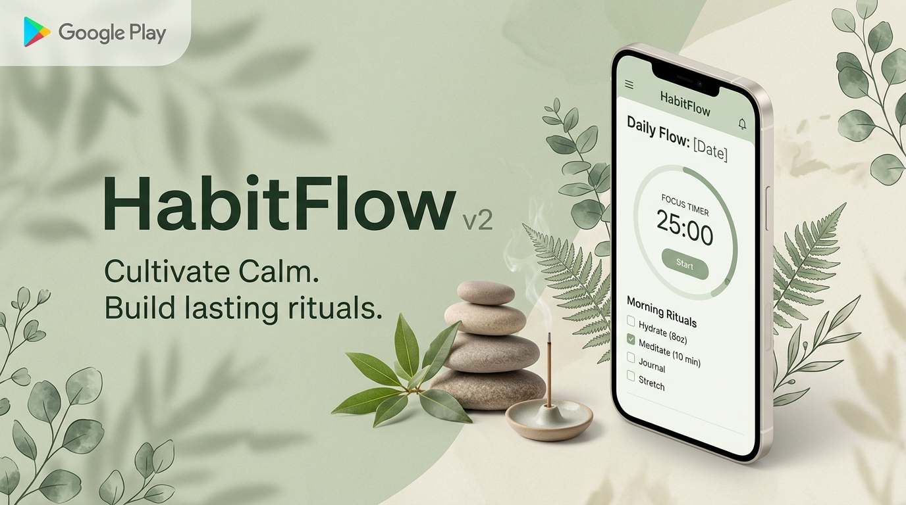
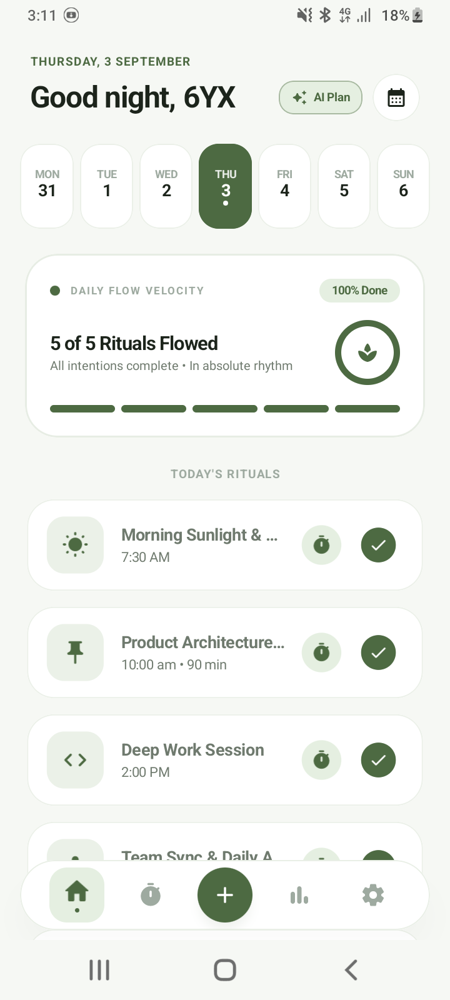
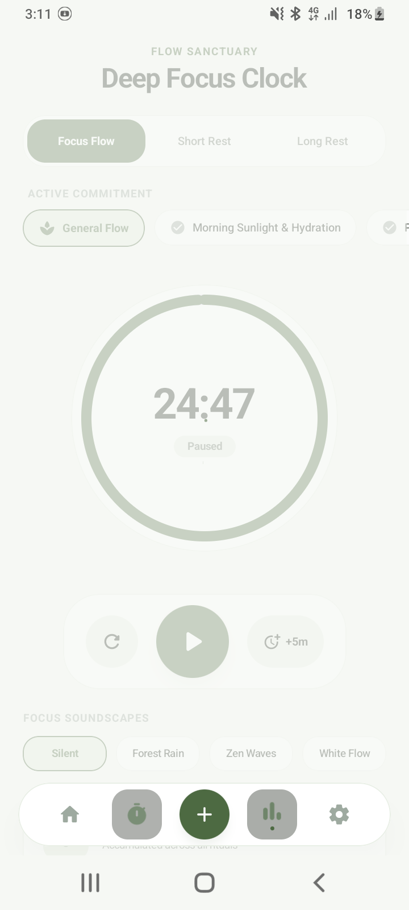
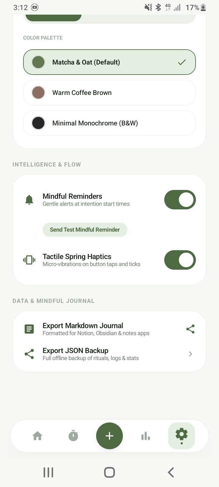

An editorial daily routine planner, tactile Pomodoro clock, and AI schedule engine crafted for cognitive clarity. Completely offline-first with zero tracking.

Full 7-day responsive week overview at a single glance. Zero horizontal sliding required. Every day is instantly accessible.
Choose between Deep Focus Sprint, Health & Movement, or Study & Retention to generate energy-balanced time blocks with subtasks.
Integrated Pomodoro flow clock with native Android micro-haptics, circular animated progress dial, and auto task completion.
Mathematical real-time audio synthesis: Forest Rain, Zen Waves (136.1Hz harmonics), and White Flow with 0 MB download bloat.
One-tap export to formatted Markdown for Notion, Obsidian, and Bear, or complete structured JSON for personal backups.
Native home screen widget tracking daily flow velocity with quick actions to view rituals and launch the focus clock.
Optimized for low-spec ARM7 and high-refresh flagship Android devices alike.



Your habits, focus hours, and daily intentions stay entirely on your device. We use no analytics SDKs, no advertising trackers, and require no account logins. Read our complete Privacy Policy.